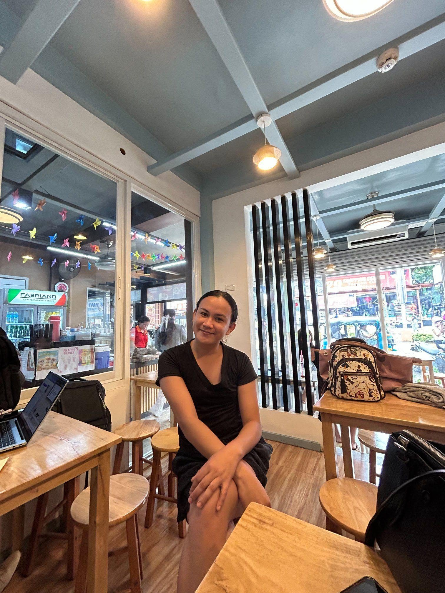

My Journey of Faith & Light
"You are the light of the world. A town built on a hill cannot be hidden." — Matthew 5:14

Hello, I’m Jaylo Antoque
1st Year · Bachelor of Computer Science · Section 32
"Ang buhay ay parang karera, hindi kailangan magmadali. Ang mahalaga ay hindi ka huminto."
Faith as My Foundation
As I walk through my journey as a student, I realize that faith is not just a part of my life — it is the very ground I stand on. Being "God-Centered" means I do not rely on my own strength alone, but on His wisdom and grace. Every challenge I face, every code I write, and every dream I chase is placed in His hands. He is my guide, my strength, and my hope. When I feel tired or uncertain, I remember: He who began a good work in you will carry it on to completion.
— Philippians 1:6
Integrity in Every Step
Integrity means being true to who I am — even when no one is watching. In my studies, in my relationships, and especially in the digital world, I choose honesty. I will not copy what is not mine, I will speak the truth, and I will stand by what is right. My worth is not measured by grades alone, but by the goodness of my heart and the uprightness of my character. To be a "Light of the World" is to shine with honesty, always.
— Proverbs 10:9 "Whoever walks in integrity walks securely."
Light in the Digital World
Technology is a powerful gift, and with it comes great responsibility. As a future computer scientist, I promise to use my skills to build up, not to tear down. I will be kind online, I will respect others, and I will protect the truth. The internet can be a place of darkness, but I choose to be a light there — sharing hope, spreading kindness, and honoring God in every post, message, and creation. My digital footprint will reflect my faith.
— Ephesians 5:8 "Live as children of light."
My Promise to Myself & to God
I may be young, and I may still be learning, but my heart is set — I will not rush through life. I will walk with purpose, guided by faith, anchored in integrity, and shining brightly in the digital age. I am a student of TCGC. I am a child of God. I am the Light of the World. And I will not stop — no matter how hard the journey gets.
"I may not be there yet, but I am moving forward — one step, one prayer, one good choice at a time."